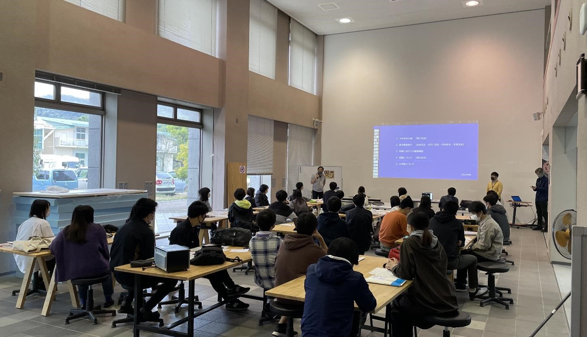

先端社会デザインコース（FSDコース）で実施された活動を報告します．
掲載日時:2021-04-10

新入生から4回生までの各学部生ガイダンスにて，新任教員として挨拶しました(残念ながら1回生の皆さんのガイダンスには出席できず，代読をお願いすることになりました．すみません！)．これから造形メディアデザインコースの皆さんと一緒にさまざまな活動をできるのが本当に楽しみです！よろしくお願いします！
← 研究室メンバー 成果 →